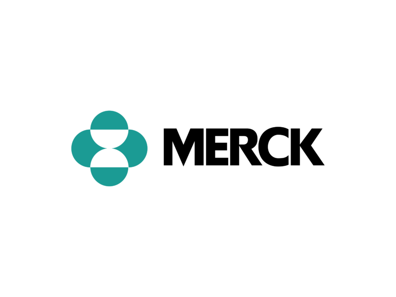
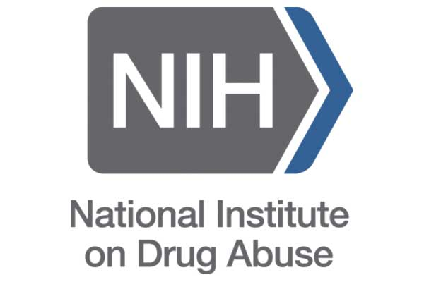

Environmental Protection Agency (EPA)
Toxicity Data Scientist
Durham, NC | Nov 2024 – May 2025
I built automated workflows to clean, analyze, and visualize complex scientific datasets, turning raw assay results into clear insights.
UC Berkeley
Lecturer
Berkeley, CA | May 2025 – Current
I instructed multiple graduate level programming and computational classes.

Merck
Graduate Capstone Project
Berkeley, CA | Jan 2024 – Jun 2024
I fine-tuned an LLM for scientific article analysis.
Research Experience
Chavkin Lab – UW Pharmacology
Research Intern
Seattle, WA | Jun 2021 – Jan 2023
I conducted cellular signaling research on peripherally restricted drugs, analyzing experimental data, and presenting findings.

NIDA Summer Internship – Harvard Medical School
Research Intern
Belmont, MA | Jun 2022 – Aug 2022
I researched genetic risk factors for cocaine addiction, performing multiple molecular assays.